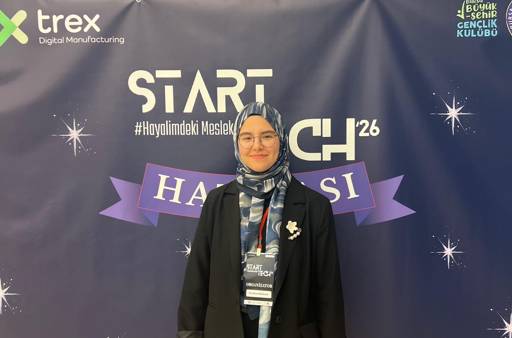
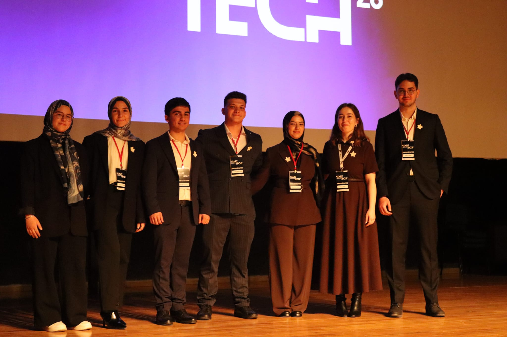
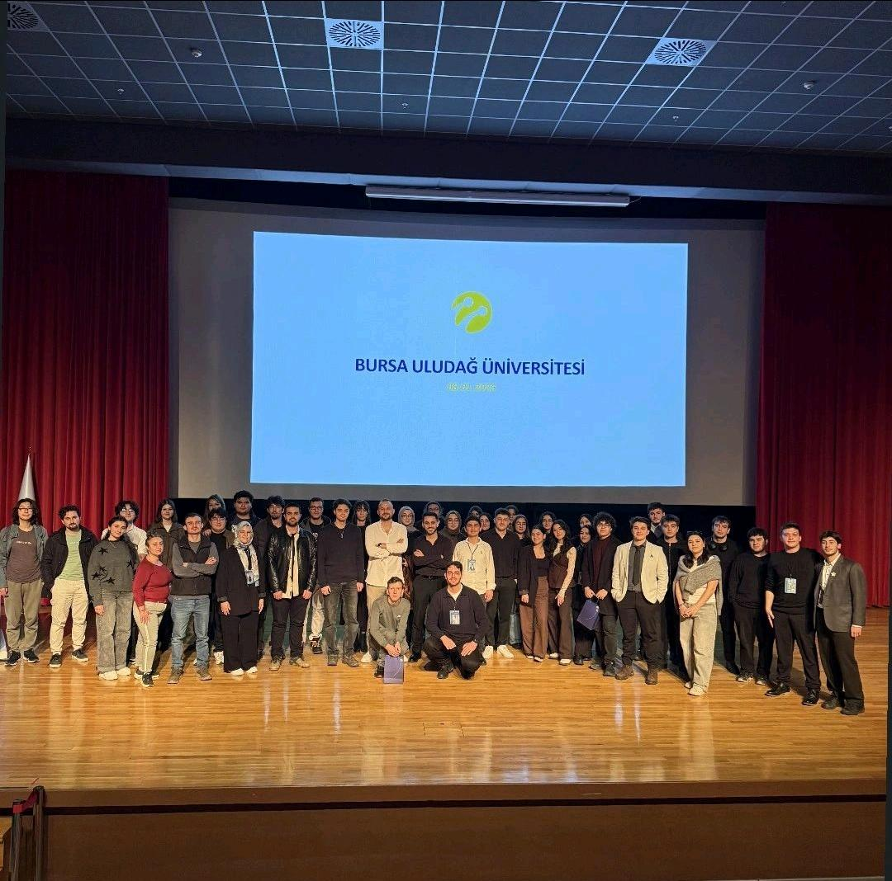
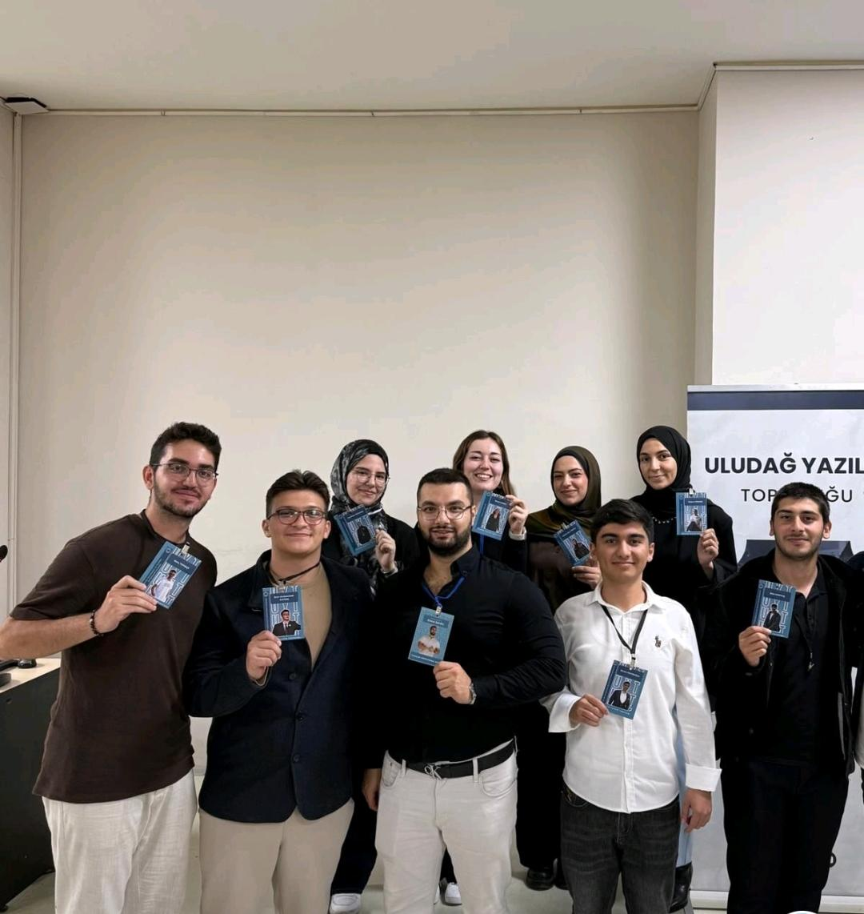

Yapay zeka, veri bilimi ve yazılım geliştirme alanlarına ilgi duyan bir Bilgisayar Mühendisliği öğrencisiyim. Öğrenmeyi, üretmeyi ve gerçek problemlere teknolojiyle çözümler geliştirmeyi seviyorum.

Bursa Uludağ Üniversitesi Bilgisayar Mühendisliği 3. sınıf öğrencisiyim. Yapay zeka, makine öğrenmesi ve veri bilimi alanlarında kendimi geliştiriyorum. Görüntü işleme ve segmentasyon çalışmalarında otonom araç geliştirme ekibinde görev aldım.Gönüllü olarak 1.5 yıldır Uludağ Yazılım Topluluğu'nda Akademi departmanı koordinatörü olarak ekip arkadaşlarımla birlikte birçok etkinlik düzenledim. Takım çalışmasına yatkın ve öğrenmeye açık bir mühendis adayıyım.
Boş zamanlarımda kendimi geliştirmek için projeler yapıyorum ve teknik blog yazıları yazıyorum.
Kullanıcıların etkinlik oluşturup yayınlayabildiği, diğer kullanıcıların etkinliklerini görüntüleyip katılım sağlayabildiği bir web uygulamasıdır.
Blog-In, kullanıcıların blog yazıları yazabileceği, kategorilere ayırabileceği, yorum yapıp beğenebileceği modern bir blog platformudur. Standart blog özelliklerinin yanı sıra İşbirlikçi Yazarlık ve Yazı içi Referans/Kaynak Gösterme gibi gelişmiş özellikler barındırır.
Restoran müşterilerinin verdiği değerlendirmelere göre müşteri memnuniyetini tahmin etmek amacıyla geliştirilmiştir. Python kullanılarak veri analizi yapılmış ve makine öğrenmesi yöntemi olarak Gaussian Naive Bayes algoritması kullanılmıştır.
Bir ilişkisel veritabanında (SQL) oluşturulan tablolar üzerinde INSERT, UPDATE, DELETE işlemlerini gerçekleştirerek bu değişiklikleri uygulama katmanında yakalayıp bir NoSQL veritabanına (MongoDB) aktarılmıştır. Böylece Change Data Capture (CDC) mekanizmasının basit bir prototipi geliştirilmiştir.
Kullanıcıların acil durum ihbarlarını kolayca bildirmesini ve ekiplerin bu ihbarları önem derecesine göre görüntülemesini sağlayan bir web tabanlı uygulamadır. Kullanıcılar ihbar gönderir ve gelen ihbarlar heap veri yapısıyla öncelik sıralaması olacak şekilde listelenir.
Uludağ Yazılım Topluluğu'nda düzenlediğimiz 8 haftalık 6 oturumdan oluşan Python eğitim kampımızda Akademi Departmanı Koordinatörü olarak; planlama aşamasından oturumların yürütülmesine, eğitmenlerle iletişim ve koordinasyon süreçlerine kadar pek çok noktada rol üstlenmek benim için oldukça keyifli ve öğretici bir deneyim oldu. Kampımızda Python temellerinden başlayarak Python'u hangi alanlarda ve nasıl kullanabileceğimize dair konuları ele aldık. Oturumlarımız: - Git & GitHub Eğitimi - Python Temelleri - Python ile Web Geliştirmeye Giriş - Veri Bilimine Giriş ve Makine Öğrenmesine Giriş

StarTech'26 farklı disiplinlerden uzmanlarla tanışma, sohbet etme ve sektör hakkında doğrudan fikir alma fırsatı sunuyor. Etkinlik kapsamında mülakat simülasyonu odaları, case study seansları ve meslek rotasyonu gibi deneyim alanları yer alıyor.Bu etkinliğimizde sektörden 23 mentör davetlimizle iletişim süreçlerini ve koordinasyonunu yönettim.Uygun mentör araştırması ve departman üyelerine görev dağılımı kısmında da koordine ettim.

Etkinlikte Turkcell'den gelen değerli konuşmacılarımız bizlerleydi.Değerli bilgilerini ve sektörel tecrübelerini bizimle paylaştılar.Etkinliğin organizasyon sürecinde konuşmacılarla iletişim ve koordinasyon süreçlerini yürüttüm.

Yazılım Dünyasına Giriş etkinliğimizde yazılıma ilgisi olan ancak nereden başlayacağını bilmeyen arkadaşlarımız için bir araya geldik.Bu etkinlikte Trendyol'da Tech Lead olarak görev alan konuşmacımız yazılım dünyasındaki deneyimlerini paylaşarak sektöre dair merak edilen sorularımızı cevapladı.
Bana ulaşmak için aşağıdaki iletişim bilgilerini kullanabilirsiniz. Geliştirdiğim projeleri ve faaliyetlerimi hesaplarımdan detaylı inceleyebilirsiniz.